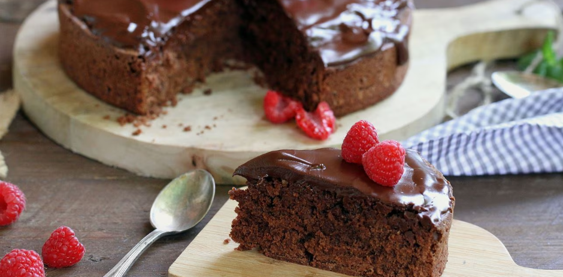

Gluten Free Chocolate Cake

Una delicia de chocolate apta para celiacos
Ingredientes
150 g de Chocolate Negro NESTLÉ Postres + 100 g para la cobertura
100 g de mantequilla y 50 g para la cobertura
125 g de azúcar
75 g de harina de almendras
50 g de harina de maíz
4 huevos
una pizca de sal
1 sobre de levadura en polvo sin gluten
Steps
- Precalentar el horno a 180º.
- Fundir 150 g de chocolate troceado con 100 g de mantequilla al microondas.
- Batir las yemas con el azúcar hasta que estén cremosas.
- Añadir la mezcla de chocolate y mantequilla, las harinas y la levadura y mezclar.
- Montar las claras a punto de nieve con una pizca de sal e incorporarlas, con movimientos suaves y envolventes.
- Verterlo en un molde de 20 cm forrado con papel de horno y cocer durante 50' aproximadamente.
- Retirar del horno y dejar enfriar encima de una rejilla.
- Fundir 100 g de chocolate troceado con 50 g de mantequilla al microondas. Remover hasta obtener una crema y distribuir por encima del bizcocho.